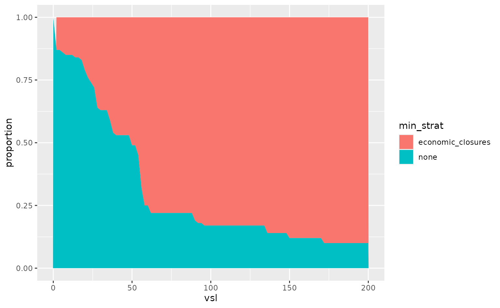

Comparing response strategies under uncertainty and valuations
Source:vignettes/strategy_comparison.Rmd
strategy_comparison.RmdThis vignette explores how decision-makers could compare different pandemic response strategies under parameter uncertainty and differing life-year valuations, using the daedalus model.
As an example, we focus on the outbreak of a novel Covid-19 like outbreak in Thailand and we consider the uncertainty in community contact rates (see also the vignette on disease parameter uncertainty).
# load {daedalus} and helper packages
library(daedalus)
library(dplyr)
#>
#> Attaching package: 'dplyr'
#> The following objects are masked from 'package:stats':
#>
#> filter, lag
#> The following objects are masked from 'package:base':
#>
#> intersect, setdiff, setequal, union
library(tidyr)
library(ggplot2)General approach
The general approach is:
Create multiple
<daedalus_country>objects with distinct values of contact_matrix;Run
daedalus()on each distinct<daedalus_country>object, comparing costs under two different response strategies;Compare the breakdown of costs in terms of life-year, economic and educational components;
Analyse how costs changes with different life-year valuations and their impact on strategy choice.
Introducing uncertainty in contact rates
To introduce uncertainty in contact rates, we randomly sample contact matrices from other countries in the package and store these in country objects.
# draw 100 random integers between 1 and the number of countries in the package
rand_ind <- sample(1:length(country_names), 100, replace = TRUE)
# create a list of the contact matrices associated with these random integers:
# index 3 of daedalus_country is the contact matrix
rand_mat <- lapply(rand_ind, function(ind) {
country <- country_names[ind]
daedalus_country(country)[[3]]
})
# create a list of daedalus_country objects using Thai data and the randomly
# selected contact matrices
country_list <- lapply(
rand_mat,
function(x) {
daedalus_country("Thailand", parameters = list(contact_matrix = x))
}
)
# view a country object
country_list[[1]]
#> <daedalus_country>
#> • Name: Thailand
#> • Demography: 3596052, 12336091, 44823339, and 9044496
#> • Community contact matrix:
#> 0-4 5-19 20-64 65+
#> 0-4 3.71875000 2.6043561 7.085408 0.3308315
#> 5-19 0.90524919 13.0380375 6.757191 0.6884541
#> 20-64 0.58312815 1.5999175 11.224588 1.1912292
#> 65+ 0.08726933 0.4686894 3.442413 2.5454869
#> • GNI (PPP $): 17710
#> • Hospital capacity: 21987Run DAEDALUS model for each country object under two response strategies
As an example, we run the model for no closures and economic closure response strategies, for a Covid-19 like outbreak assuming no prior vaccine investment.
Note that running daedalus()
iteratively may take some time, as the function checks the inputs and
internally prepares parameters each time, as well as preparing the
output data. Future package versions aim to streamline these steps and
provide a stripped down version of the function optimised for scenario
modelling for parameter fitting or with parameter uncertainty.
Users can run the model iteratively over the country samples in parallel using frameworks such as the furrr package.
# run daedalus() for no clousure and economic closure strategies
output_list_none_closure <- lapply(country_list, daedalus,
infection = "sars_cov_2_pre_alpha",
response_strategy = "none"
)
output_list_econ_closure <- lapply(country_list, daedalus,
infection = "sars_cov_2_pre_alpha",
response_strategy = "economic_closures"
)We can then extract and plot the total losses under each strategy.
# extract the costs under each strategy across all three domains
costs_none_closure <- vapply(
output_list_none_closure, get_costs, numeric(3), "domain"
)
costs_econ_closure <- vapply(
output_list_econ_closure, get_costs, numeric(3), "domain"
)
# store as a dataframe
costs_none_closure <- data.frame(t(costs_none_closure)) %>%
mutate(sample = row_number(), response_strategy = "none")
costs_econ_closure <- data.frame(t(costs_econ_closure)) %>%
mutate(sample = row_number(), response_strategy = "economic_closures")
costs <- bind_rows(costs_none_closure, costs_econ_closure)
# make violin plots of the total cost under each strategy
ggplot(
data = costs,
aes(
x = response_strategy, y = economic + education + life_years,
fill = response_strategy
)
) +
geom_violin()Comparing cost dimensions/domains
Response strategies should not just be compared in terms of total losses, but also the loss in each dimension (life years, economic losses and educational losses). There may be a trade-off between e.g. life year losses and economic losses when comparing two strategies.
Here, we make scatter plots of the life-year losses vs. the economic and educational losses under each strategy.
# first calculate the mean life-year and mean economic and educational losses
# for each strategy
means <- costs %>%
group_by(response_strategy) %>%
summarize(mean_x = mean(life_years), mean_y = mean(economic + education))
# make a scatter plot of the losses
ggplot(
data = costs,
aes(x = life_years, y = economic + education, colour = response_strategy)
) +
geom_point() +
geom_point(
data = means,
aes(x = mean_x, y = mean_y, fill = response_strategy),
colour = "black", shape = 21, size = 4
)##Changing life-year valuations
Decision-makers may have different preferences and different willingness-to-pay to avert the loss of a life-year. Here, we change the life-year valuations used in the model to see how that affects strategy choice.
# first we consider a range of multipliers for the value of a life year and we
# identify the loss-minimising strategy for each
props <- costs %>%
crossing(vsl = seq(0, 200, by = 2)) %>%
mutate(life_years = life_years * vsl) %>%
group_by(vsl, sample) %>%
summarise(
min_strat = response_strategy[which.min(life_years + economic + education)],
.groups = "drop"
) %>%
group_by(vsl) %>%
count(min_strat) %>%
mutate(proportion = n / sum(n)) %>%
ungroup()
# then we can make a plot of the probability each strategy is loss-minimising
# for different valuations
ggplot(data = props, aes(x = vsl, y = proportion, fill = min_strat)) +
geom_area()